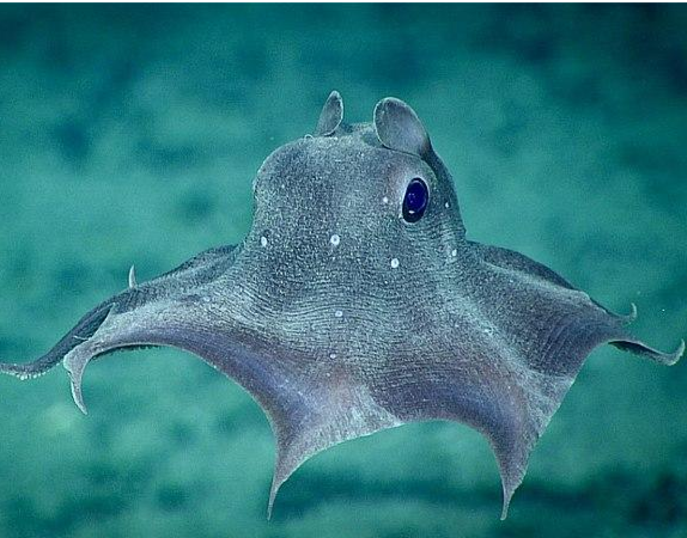
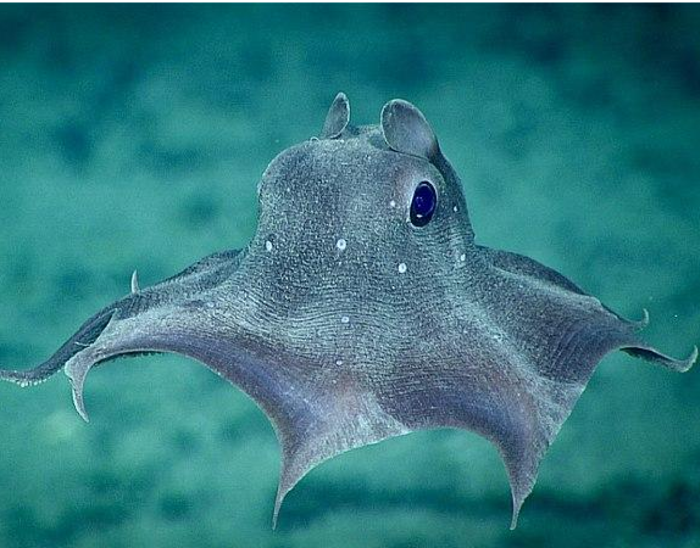

ABYSSALIS
El planeta acuatico
Especímenes de este planeta
Este nuevo planeta no solo cuenta con un ecosistema que nunca antes se habia visto sino que tambien esta integrado con forma de vida completamente distinta a las que se han visto en nuestro planeta
 
